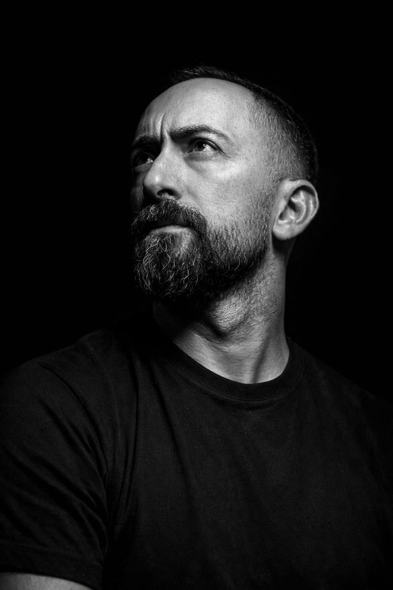
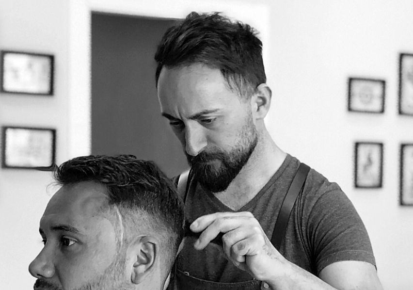
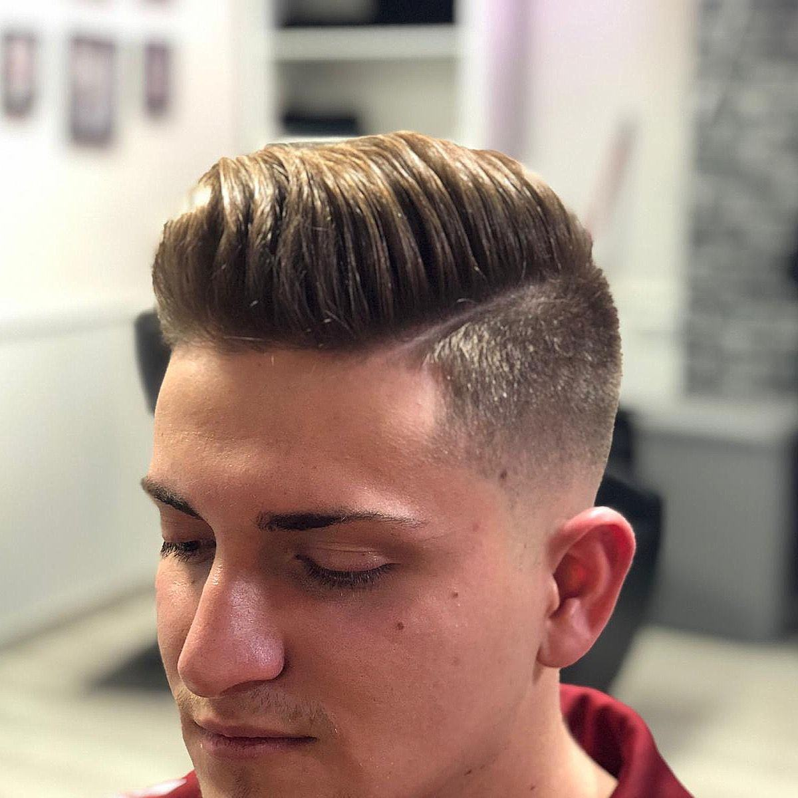
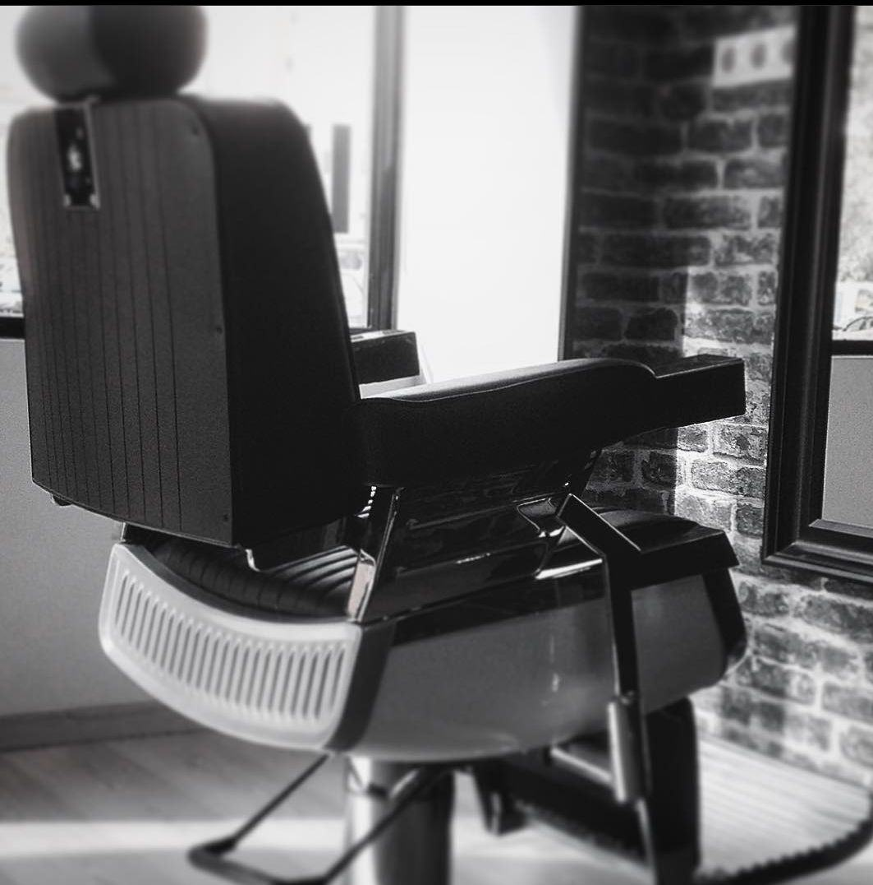
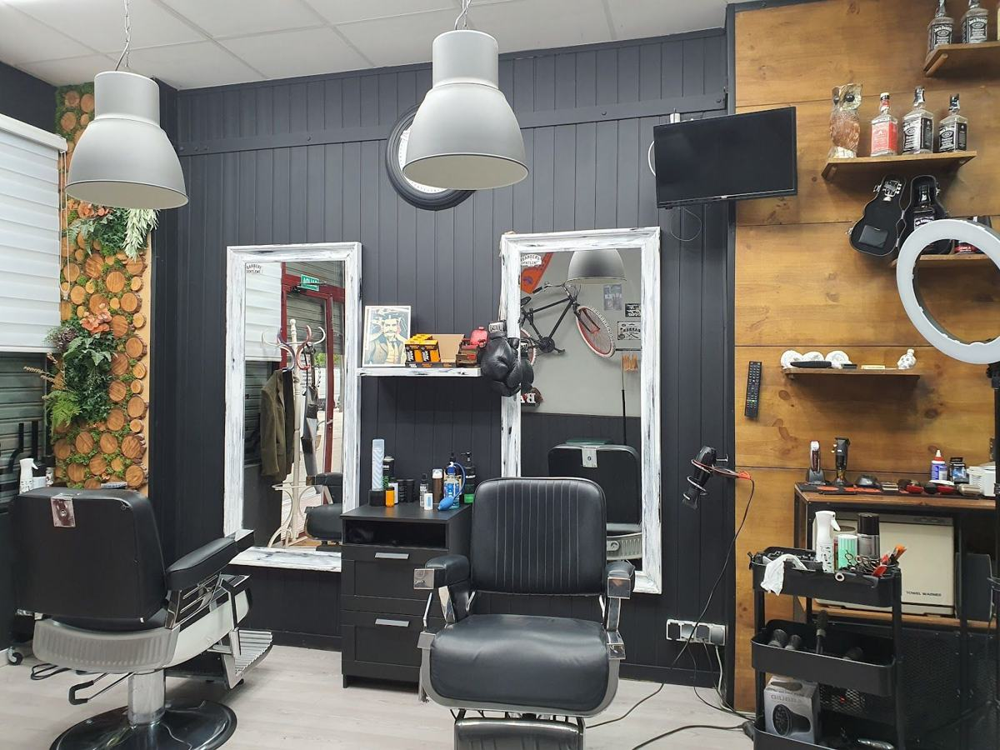

Barbería de caballeros en la calle Río Nalón, 2. Tupés, degradados y barba hechos con oficio, sin prisas y con conversación.
Pedir cita por WhatsApp4,9 · 182 reseñas en Google«Un buen corte no se nota: se nota quien lo lleva.»Sir Antony's · Alcalá de Henares




| Lunes | 10:00–14:00, 16:00–20:00 |
|---|---|
| Martes | 10:00–14:00, 16:00–20:00 |
| Miércoles | 10:00–14:00, 16:00–20:00 |
| Jueves | 10:00–14:00, 16:00–20:00 |
| Viernes | 10:00–14:00, 16:00–20:00 |
| Sábado | 10:00–14:00 |
| Domingo | Cerrado |
C. Río Nalón, 2
28804 Alcalá de Henares, Madrid